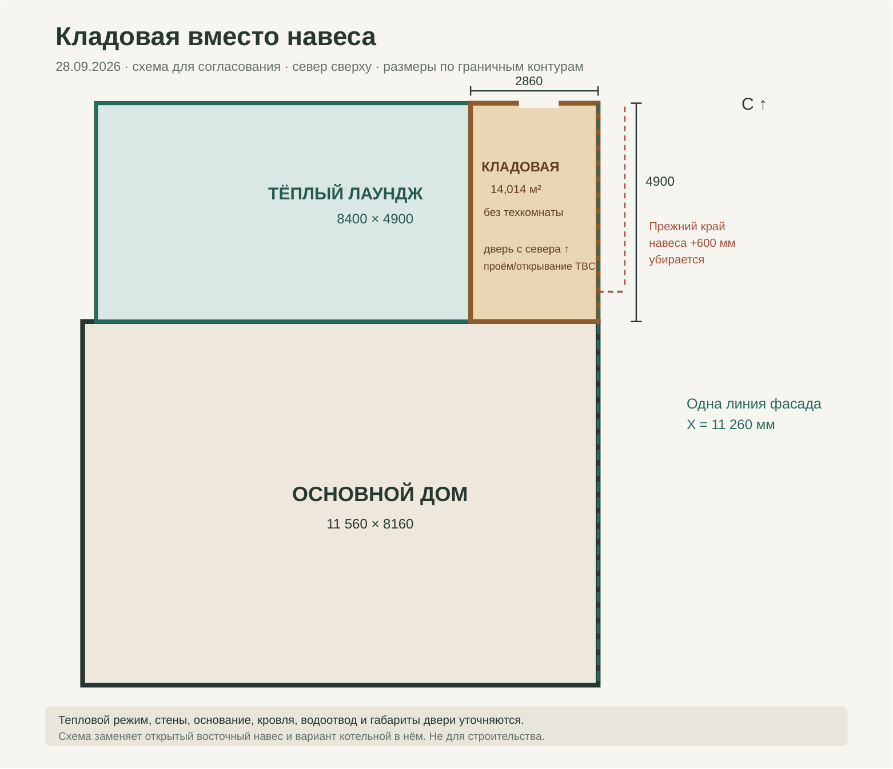
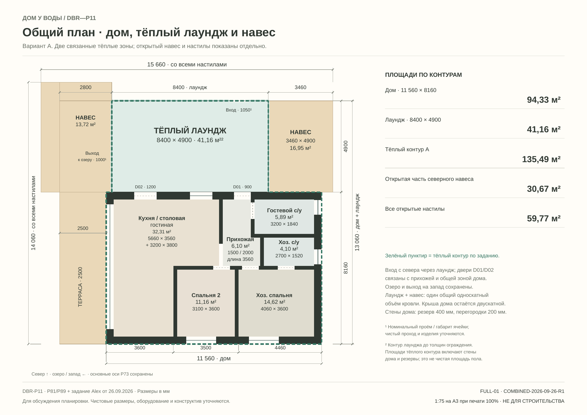
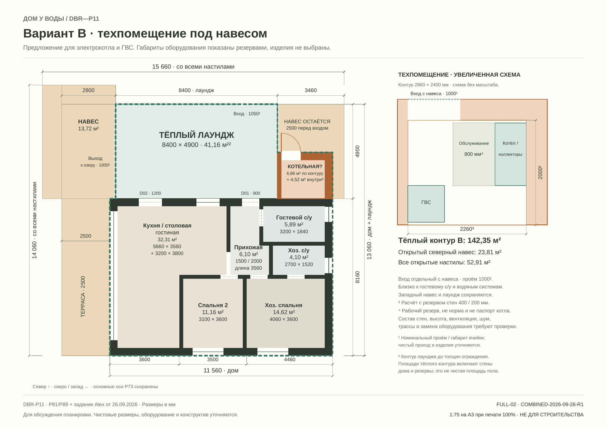
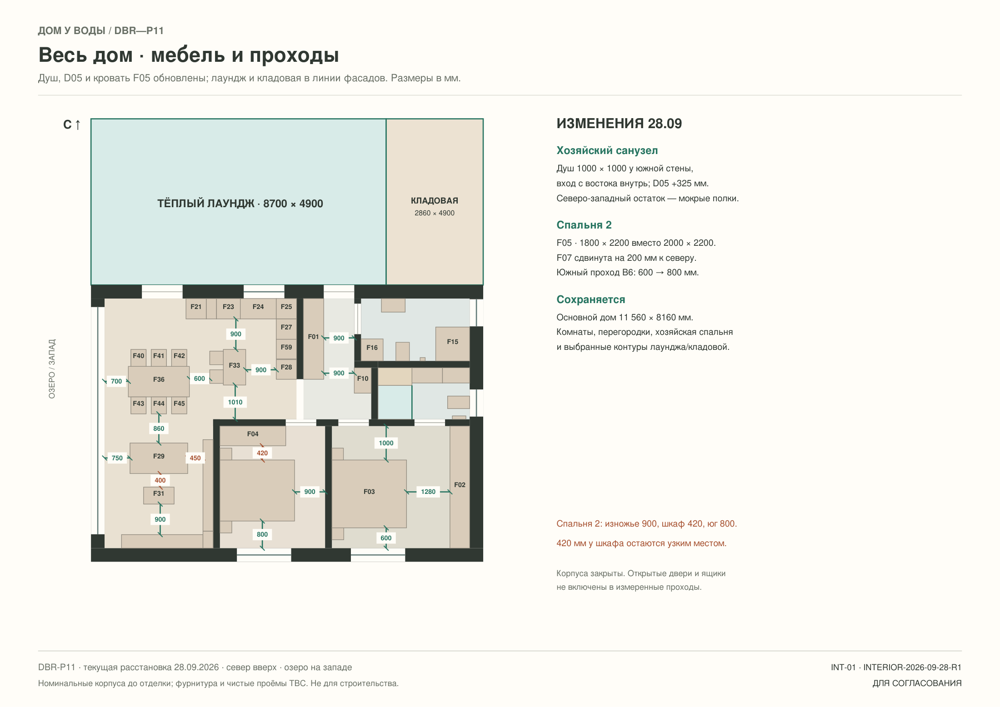
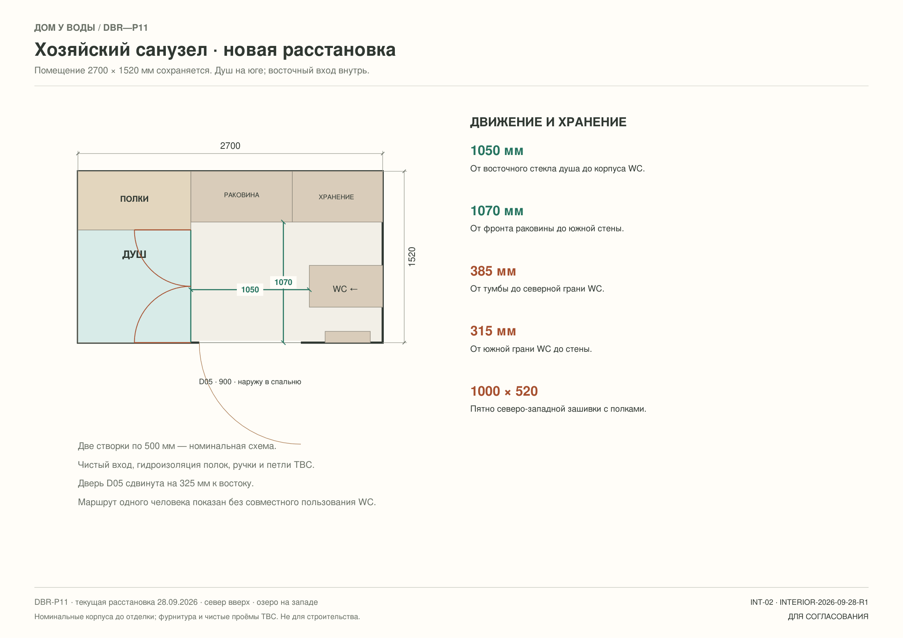
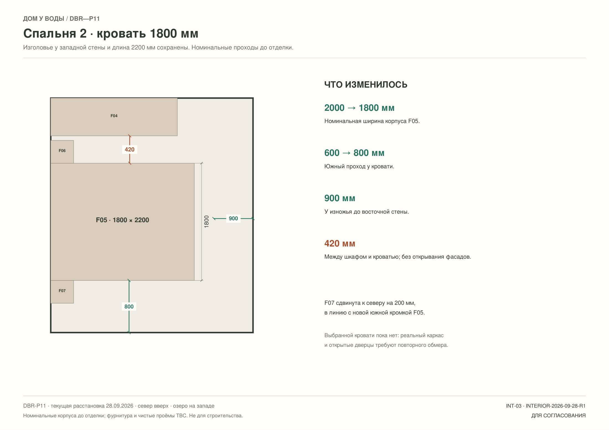
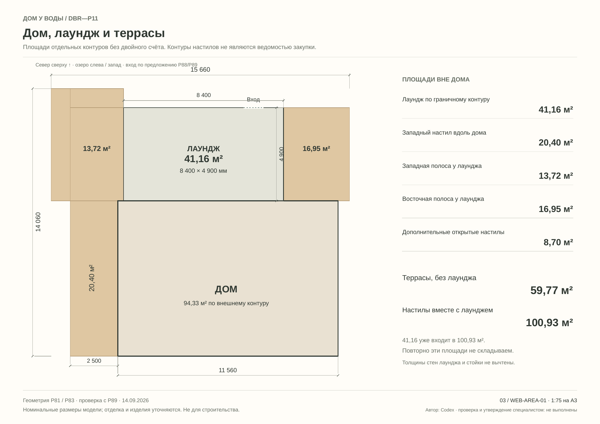

01 / Размеры и площади
Каждый метр
на своём месте.
Лаундж и кладовая выровнены с фасадами дома. В хозяйском санузле показан душ у южной стены с восточным входом; кровать F05 во второй спальне — 1800 мм. Контуры комнат и размеры дома не менялись.
Обновление · 28 сентябряРешение / 28 сентября · R2
Лаундж и кладовая
в линии фасадов.
Западная стена лаунджа теперь совпадает с западным фасадом дома. Восточная стена кладовой — с восточным. Размеры основного дома и стык лаунджа с кладовой не менялись.
 Смотреть крупнее ↗
Смотреть крупнее ↗Текущий общий контур · лаундж и кладовая в линии фасадов
Лаундж расширен на 300 мм к западу: 8700 × 4900 мм, 42,63 м² по граничному контуру; его западная стена X=−300 мм совпадает с западным фасадом дома. Кладовая остаётся 2860 × 4900 мм, восточная стена X=11 260 мм совпадает с восточным фасадом дома, вход с севера. Дом не меняется. Кровля, основание, тепловой контур кладовой и количества требуют проверки.
Новый граничный контур
Лаундж расширен на 300 мм к западу: 8700 × 4900 мм = 42,63 м². Его западная грань X = −300 мм совпадает с домом. Кладовая остаётся 2860 × 4900 мм = 14,014 м², её восточная грань X = 11 260 мм совпадает с домом; вход с северного торца.
Основной дом: 94,3296 м². Условная сумма отапливаемых граничных контуров дома и лаунджа: 136,9596 м² (+1,47 м² к R1). Кладовая не включена до решения о её тепловом режиме.
Что затронуто
Если старый внешний край западного навеса X = −2800 мм сохранить только для сравнения, открытая западная полоса сокращается с 2800 до 2500 мм — до 12,25 м². Фактические кровля, опоры, снег, водосток, фундамент, остекление, участок и материалы требуют нового расчёта. Размер и открывание северной двери кладовой пока TBC.
Архивная схема R1: лаундж ещё уже фасада на 300 мм

Смотреть крупнее ↗Архив 28.09 · лаундж ещё уже фасада на 300 мм
Архив R1 до выравнивания лаунджа: Кладовая 2860 × 4900 мм (14,014 м² по контуру), северная дверь. Восточная стена вровень с домом; прежний выступ 600 мм убран. Вся восточная полоса закрыта, техкомнаты здесь нет. Тепловой режим, стены, основание, кровля, водосток и дверь требуют проработки.
Архивная схема 26.09: открытый восточный навес и котельная в нём

Смотреть крупнее ↗Архив 26.09 · Общий размерный план · дом, тёплый лаундж и навес
Предыдущая концепция до решения 28.09; восточный навес и вариант котельной в нём заменены кладовой. 11 560 × 13 060 мм — габарит дома с лаунджем. Тёплый контур по граничным площадям 135,49 м²; открытый навес и настилы отдельно.

Смотреть крупнее ↗Архив 26.09 · Вариант B · котельная в восточной части навеса
Предыдущая концепция до решения 28.09; восточный навес и вариант котельной в нём заменены кладовой. Предложение: 2860 × 2400 мм по контуру, около 4,52 м² внутри при резерве стен. Отдельный вход, резервы оборудования и обслуживания; вариант не выбран.
Следующая таблица относится только к вариантам от 26.09. Их площади лаунджа, открытого восточного навеса и котельной не описывают текущий контур R2.
Проектная координация открытаТекущий лист — геометрия для согласования, не расчёт конструкции. Тёплый контур кладовой, кровельный стык, основание, теплопотери, участок и ведомости материалов требуют пересчёта; старые количества лаунджа и настилов не использовать для заказа.
74,18м²Сумма помещений основного дома
94,33м²Основной дом по внешнему контуру
42,63м²Лаундж по новому граничному контуру
Текущая расстановка / 28 сентября
Хватит ли места
для человека?
Весь дом, новый хозяйский санузел, спальня 2 и гостевой санузел показаны в одном наборе. В CSV — 30 контрольных размеров между номинальными корпусами и стенами.

Смотреть крупнее ↗Весь дом · текущая мебель и проходы
Общий план: душ хозяйского санузла у южной стены, D05 +325 мм к востоку, кровать F05 1800 × 2200 мм. Лаундж и кладовая вровень с фасадами.

Смотреть крупнее ↗Хозяйский санузел · южный душ, восточный вход
2700 × 1520 мм; душ 1000 × 1000 мм на юге, две номинальные створки внутрь с востока, северо-западные мокрые полки, D05 правее.

Смотреть крупнее ↗Спальня 2 · кровать 1800 мм и проходы
F05 1800 × 2200 мм; F07 сдвинута на 200 мм. У изножья 900 мм, у шкафа 420 мм, южный проход 800 мм.
 Смотреть крупнее ↗
Смотреть крупнее ↗Гостевой санузел · проходы и постирочная
Угловой душ, сдвиг раковины +300 мм, расстояния у WC и постирочной. Габариты номинальные.
Что изменилось
Душ хозяйского санузла теперь у южной стены, вход в него с востока. Между его восточным стеклом и корпусом WC — 1050 мм. Дверь D05 сдвинута на 325 мм к востоку. Прежние 520 и 420 мм перед душем относятся к старой расстановке и здесь больше не применяются.
Кровать F05 во второй спальне уменьшена по условной ширине с 2000 до 1800 мм. Южный проход вырос с 600 до 800 мм; у шкафа остаётся 420 мм при закрытых фасадах.
Как читать схемы
Размеры даны до отделки, между закрытыми номинальными корпусами. Сценарии открытых фасадов, одновременного пользования WC и раковиной, чистые проёмы дверей и выбранные изделия не проверены. Это план для согласования, не оценка нормативной доступности.
Гостевой санузел показан по прежней схеме, поскольку данная правка его геометрии не меняет; инженерный вариант V6 остаётся отдельным листом.
Архив 15.09 · старый душ и кровать 2000 мм
Эти два листа сохранены для истории изменений. Размеры у хозяйского душа и южный проход спальни 2 на них устарели.
 Смотреть крупнее ↗
Смотреть крупнее ↗Архив · Весь дом · проходы и свободные пространства
Схема до изменений 28.09: хозяйский душ, D05 и/или кровать F05 устарели. Для текущих размеров смотрите INT-01/02/03. 32 контрольных расстояния сведены на общий лист и два крупных плана санузлов. Здесь — кухня, гостиная, прихожая и спальни.
 Смотреть крупнее ↗
Смотреть крупнее ↗Архив · Хозяйский санузел · место для человека
Схема до изменений 28.09: хозяйский душ, D05 и/или кровать F05 устарели. Для текущих размеров смотрите INT-01/02/03. Перед душем, перед раковиной, перед WC и по сторонам чаши. Показаны условные зоны пользования и открывание душевых створок внутрь.
План, который
можно измерить.
Дом 11 560 × 8 160 мм. Общий лист — 1:50 на A3; отдельные комнаты показаны без единого масштаба. Для чтения на экране откройте изображение крупнее.
Следующие листы AREA показывают только неизменную геометрию помещений. Текущая мебель и новый хозяйский душ показаны выше на листах INT-01/02/03; исходные листы P89 с прежней мебелью сохранены как архив.
 Смотреть крупнее ↗
Смотреть крупнее ↗Дом · все размеры и площади
Общий план 1:50 на A3 и площади шести помещений.
 Смотреть крупнее ↗
Смотреть крупнее ↗Размеры каждой комнаты
Все стороны контуров и формулы для Г-образных комнат.
Архивная схема лаунджа и террас до корректировки контура
На этом листе лаундж 8 400 × 4 900 мм и открытый восточный навес. Его площади не использовать для текущего контура и заказа материалов.

Смотреть крупнее ↗Архив · площади лаунджа и настилов до последних изменений
Показан прежний лаундж 8400 × 4900 мм и открытый восточный навес; эти площади не применяются к текущему контуру. Общий габарит настилов и площади без двойного счёта.
Архив P89 · прежняя мебель и лаундж
Эти листы показывают прежний душ, кровать F05 шириной 2000 мм и прежний контур лаунджа. Для новых расстояний и выбранного контура используйте INT-01/02/03 и FULL-04 выше.
 Смотреть крупнее ↗
Смотреть крупнее ↗Архив · Весь дом · сводная планировка
Схема до изменений 28.09: хозяйский душ, D05 и/или кровать F05 устарели. Для текущих размеров смотрите INT-01/02/03. Дом, закрытый лаундж, террасы и внешние зоны в одной схеме.
 Смотреть крупнее ↗
Смотреть крупнее ↗Архив · Дом · мебель и зонирование
Схема до изменений 28.09: хозяйский душ, D05 и/или кровать F05 устарели. Для текущих размеров смотрите INT-01/02/03. Базовая расстановка P89. Актуальное положение гостевой раковины и расстояния — на SPACE-01/03 и WET-G от 15.09.
 Смотреть крупнее ↗
Смотреть крупнее ↗Архив · Лаундж · вход, кресло и шкаф
Схема до изменений 28.09: хозяйский душ, D05 и/или кровать F05 устарели. Для текущих размеров смотрите INT-01/02/03. Лаундж: вход в северном остеклении, одно мягкое кресло и шкаф для верхней одежды у входа в дом. Шкафа-перегородки нет.
Площади комнат
Г-образные комнаты считаем как сумму двух прямоугольников. Стены, отдельный открытый переход, лаундж и террасы в сумму комнат не включены.
Что означает 94,33 м²
11,560 × 8,160 = 94,3296 м² по внешнему контуру основного дома. Внутри этой величины находятся помещения, перегородки и наружные стены. Это другая величина, чем сумма комнат 74,1776 м².
Внутренний контрольный контур: 74,1776 м² комнат + 4,7800 м² перегородок + 0,2360 м² открытого перехода = 79,1936 м².
Открытые настилы требуют пересчёта
Прежние 59,774 м² террас без лаунджа включали восточный навес 16,954 м². Он заменён кладовой 14,014 м² по контуру, а прежний выступ 600 мм исключён. Поэтому старую сумму террас нельзя использовать как текущую ведомость настилов.
Чистые площади и заказные размеры уточняются после выбора стен, отделки и изделий.